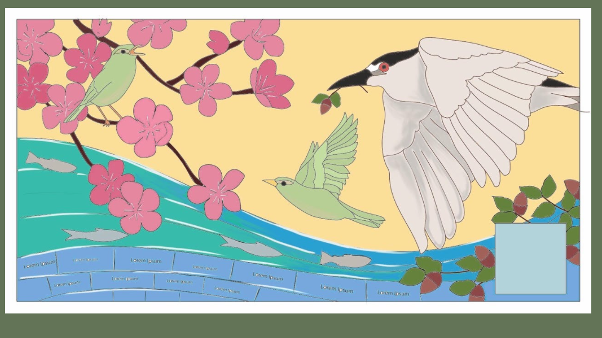

Embedded Files
Now accepting applications for Summer 2027 High School Exchange to Japan AND Summer 2027 APCC Exchange to Japan.

The Oakland Fukuoka Sister City Association is excited to announce that 2022 marks the 60th anniversary of the relationship between Oakland and Fukuoka.
To commemorate the occasion, OFSCA is collaborating with local artists, Fukuoka partners and Oakland youth participation to install a public mosaic mural at the Gardens at Lake Merritt.
We invite you to join us in this historical commemoration by joining hands to create a beautiful symbol of friendship in the city of Oakland!
Join us for a FREE mosaic art class and help us make the 60th anniversary public mosaic mural !!
Join us for a FREE mosaic art class and help us make the 60th anniversary public mosaic mural !!
This is the mural that you will help create!

Compassion, Peace, and Community
Compassion, Peace, and Community
Commemorating 60 years of friendship between Oakland, CA and Fukuoka, Japan
Designed and facilitated by Rachel Rodi & Guy Fuerte
HOW TO SIGN UP:
Sign up to join the Mural Team and participate in this special opportunity to learn and make a community public mosaic mural that we can all enjoy for years to come!
Complete this form today to apply: https://bit.ly/CreateMural
Applications due by May 25, 2022 (or as space allows)
2022 Schedule for Participants
June 52–5 pm
Learn how to make a mosaic with artists Rachel Rodi and Guy Fuerte. You will learn techniques in this class and be able to make your own mini mosaic project that you can keep. The artists will grout your beautiful creation which you will receive in the following session after it has set.
June 122–5 pm
Help us make the Oakland Fukuoka Sister City's 60th Anniversary Public Mosaic Mural. Come be a part of the history! You will use what you learned to help make the mural.
Your mini mosaic projects will be distributed to you on this day.
June 192–5 pm
Back-up day in case we need more time to complete the mosaic mural (May be canceled or may be reduced in hours. Please hold on your calendars.)
All 3 dates are required to be held on your calendars. Minimum participation in both June 5 and June 12th is required. June 19th will be reserved but this date or part of the time held may be canceled if we have completed the tile placement on the public mural. To be decided on June 12th together. Please reserve the full time on your calendars, Sundays 2-5 pm.
Location in Downtown Vallejo:
Rachel Rodi Mosaics Studio (outdoors; back-up location for weather in the studio with ventilation)
336 Georgia St. #1
Vallejo, CA 94590
Target participants:
School age youth (6th-12th grade) and their parents, guardians, aunts, uncles, grandparents or other family members. Adults in our community interested in this project and cultural exchange.
Priority will be given to youth in Oakland. We welcome you from other locations in the Bay Area and family and adult participation!! Join us!
Space is limited to 10 slots, please sign up early.
Download To Share Our Flyer with Friends and Community Contacts!
Questions? Contact the project lead, JJ Kotler at ofscamural@gmail.com
COVID Safety
We will be requiring all participants to sign up for this opportunity and reserve their spot and follow the protocols below to help keep our communities safe.
The class and mosaic fabrication dates will be held outdoors under a tent. (As a back-up for weather/wind conditions in the studio with ventilation.)
High quality facial masks will be required during these sessions. We will have a limited number of KF94 or N95 or KN95 masks available if you do not have one.
We will distance as much as possible while making the mural. We will be at a long table together.
Hand sanitizer will be available.
Surfaces will be wiped down.
Before coming to a session, participants are instructed to perform an at home health check. Stay home if you or a household member have symptoms of COVID-19 or if you were in close contact with a person who tested positive for COVID-19 within the past 14 days.
Thank you for helping to keep our communities safe and healthy!
The Oakland Fukuoka Sister City Association is a 501(c)(3) non-profit organization Tax ID 94-2582130
Questions? OFSCAmural@gmail.com
Page updated
Report abuse